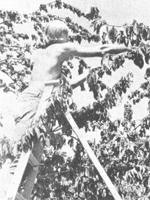
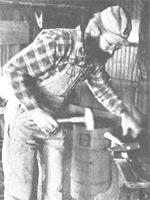
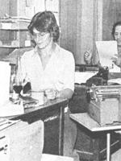
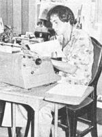

Do you have a product or service you need to sell?
The editor of your local newspaper wants desperately to give you free advertising. In fact, he or she would be overjoyed to print information about the crafts you make . . . the food you sell at your homestead ... the business you operate ... or the service you perform.
There are, however, a few tricks that you'll have to know ... in order to make that editor realize how much he wants to "promote" your home enterprise. And, since I've been in the newspaper game for eight years, I can tell you all about these gimmicks.
First, you must understand the "Golden Rule" of most newspaper owners: "Spend not! " Practically speaking, this translates: "Why hire two reporters when one can be made to do the work of two ... or three?" And this philosophy holds true for all but the largest,. most prestigious papers in the country.
As a result of this "rule", the editors of almost all small and medium-sized papers-the kind that probably serve your community--find themselves chronically understaffed and continually overworked ... and their problems can help you get your story into print. The paper needs news week after week to fill its columns, so you'll delight your local editor if you come in and hand him or her a free story that he or she can pop right into one of those empty spaces.
Your story won't be "hard news" (such as a bank robbery or an auto accident). Rather, it will be what journalists call a "feature". And editors of small papers are always on the lookout for good features: a man who makes wooden toys ... a rockhound who fashions jewelry from the stones he collects ... a catfish farm ... a candlemaker ... a man who welds metal scraps into "art" objects ... a man who makes furniture from scrap lumber or wooden burls ... a "u-pick" cherry orchard, and so on.
I know that each of those subjects would make a good feature, because I've written stories on all of them. Try writing one about yourself, and - if it appeals to the paper's editor you'll get free advertising.
The key to a good feature is the lead ... those first few lines that set the tone of the story. A harried editor will quickly hurl your literary gem Into the trash if the first paragraph is dull. On the other hand, a good lead will probably get an otherwise routine story into the paper (or at least bring you some suggestions on how to improve It).
So what makes a good lead? Well, for an example, let's consider the one I wrote on the "u-pick" cherry orchard. I could have pounded out something like:
"Newhall residents can save money by picking their own cherries at Rex's 'U-Pick' Cherry Orchard." But my boss would have thrown the story right back at me, because, one, It's dull, and two, It might offend local market owners who pay the paper for their advertising.
The lead I finally wrote for the cherry story went like this:
"It's that time of year, and people are picking on Rex again. Children pick on him. Adults pick on him. Busloads of senior citizens drive all the way to Rex's orchard just to pick on him. But Rex doesn't mind. In fact, he loves It, because ...
It didn't win me a Pulitzer Prize, but It did make my editor chuckle. (You know you've accomplished something when your story prods any emotion out of a hardened newspaper editor.)
When I wrote the rockhound story, I might have started out with something about how Joe Smith had turned his hobby into a profitable small business. That would have been an okay lead, but it wouldn't actually have reached out and grabbed anyone. So, I started the story this way:
"In ancient times, the alchemists searched in vain for the secret of turning lead into gold. Joe Smith of Saugus has done the ancient magicians one better. He turns rocks into money.
" Are you getting the Idea? All you do is take a relatively commonplace topic and write about It in a snappy, interesting way. In fact, even a very routine business may hide a seed that could sprout into a good feature. The article that I wrote about a welder is an example:
"Jack Jones earned $2,000 a month at City Hospital. He had a big house, lots of bills, and an ulcer. Now Jones is broke, lives on a small farm in Saugus, and smiles most of the time.
" It's not the fact that Jack is a welder that makes that lead interesting ... It's the fact that he left a big-money job to get back to the land. If It were changed a little, that introduction could begin stories about many of MOTHER's readers.
Once you've got a good lead, the rest of the piece won't be too difficult. In the case of Jack-the-Welder,
I told a little about the life he hated in the city ... the last straw that convinced him to make the move ... and the problems that he faces in his new life.
The "new life" part of the piece is a perfect place to work in information about how Jack welds for low prices or even for barter. Don't get technical. Remember, your story must not sound like an advertisement. People would much rather know about the time you almost burned your house down melting wax than read all the steps it takes to make a candle.
If you check your local paper for their story style, you'll probably find short paragraphs made up of basic, easy-to-understand sentences. Keeping that in mind, type up your manuscript (handwritten stories are almost sure to be rejected) and limit It to no more than three or four pages.
Start typing about halfway down the first page to leave room for a headline (which the editor will write). Double-space your lines and be sure to double-check all of your facts and spellings. A neat, typed, error-free manuscript will save the editor's time and eyes ... and cause him or her to smile upon your literary offering.
Aside from submitting a bright, interesting story, there's one other thing you can do to win a place on The Front Page: Supply the editor with some good black-and-white (no color) photographs that will illustrate your piece. Good photos can even help sell a marginal story and are sure to give any article a better chance of reaching print.
The easiest way to supply pictures is to shoot (or have a friend shoot) a whole roll of film (usually 35mm) and then turn it In undeveloped. The paper will have access to a darkroom.
It's even better if you develop the film yourself and make 8" X 10" glossy prints from your two or three best shots. Be sure, however, that the pictures show something other than you grinning into the camera lens. They must be sharp and clear and should always illustrate whatever the story says you do. If you make cornhusk dolls, for example, be at work on one in the photo ... with several others completed and scattered around your work area. A candlemaker could perhaps pour wax Into a mold in front of a display of finished candles.
Time your submission properly. Remember those old movies where the kid reporter ran into the newspaper office and shouted "stop the presses"? Forget it! It probably never happened.
The quickest way to get thrown out on your tail Is to try to see a newspaper editor at deadline ... those frantic hours just before the paper goes to press.
In fact, It pays to find out when your local paper's deadline occurs, and then go In after that to see the person- in- charge. The editor will then have time to look at your article and tell you what changes (if any) to make.
So get to work. The local paper needs your story ... and you can always use the free advertising!
|
 For a ""u-pick"" cherry story, you'll want a photo that shows how to pick 'em... with a good shot of an orachard worker in cherry -packed tree. |
 An article about your own work must show you on the job...the blurred hands of this blocksmith give a feeling of action and movement. |
 The modern newspaper office of the Newhall Signal... shows two members of the editorial staff, as they turn out copy for publication. |
|
 A college student who works at the Signal--during his summer vacation--does a bit of just about everything...here he measures the size of a photo. |
|
|